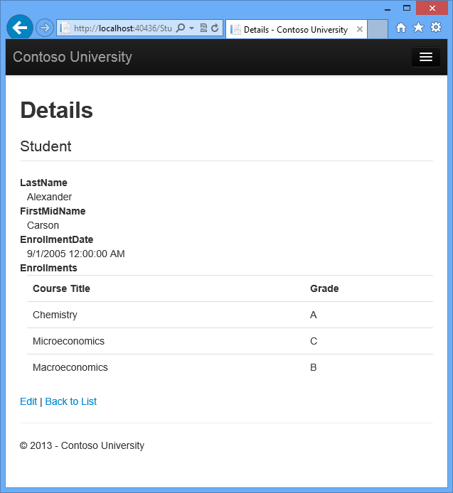
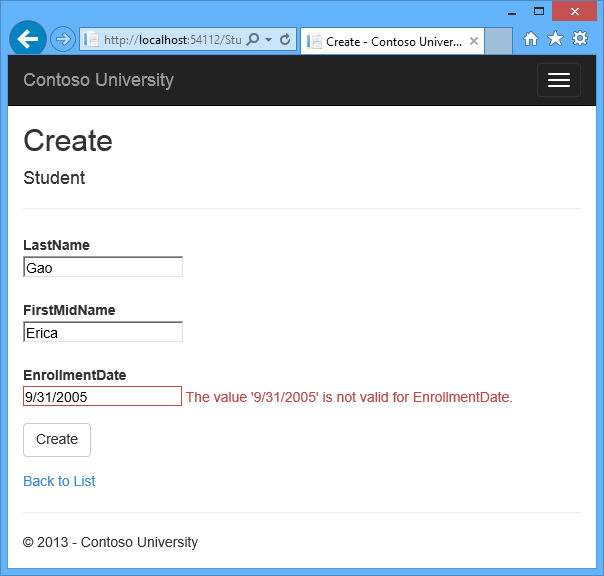
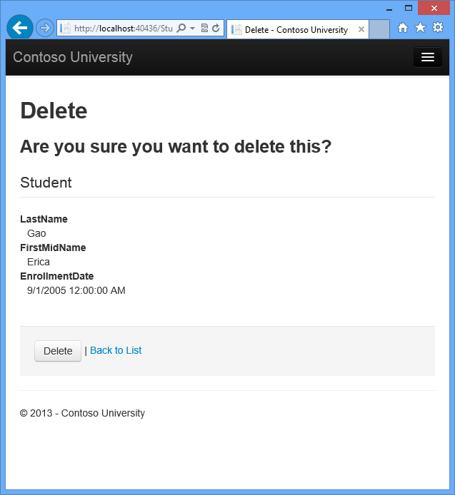
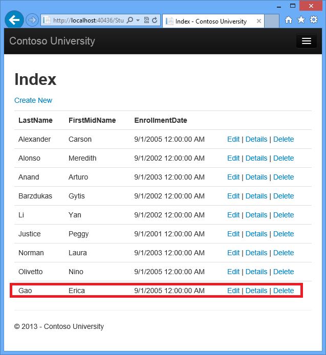
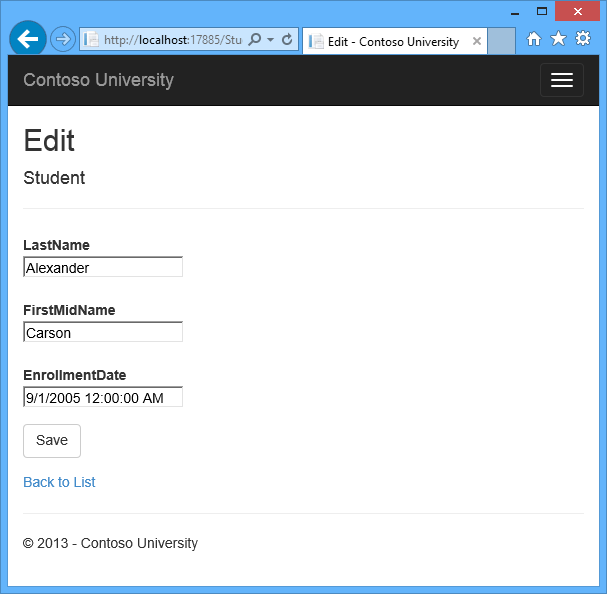
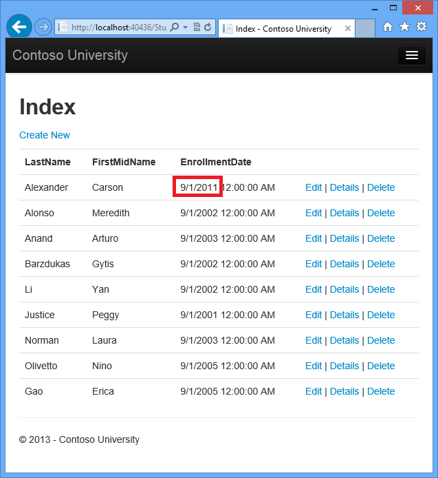

Implementing Basic CRUD Functionality with the Entity Framework in ASP.NET MVC Application
The Contoso University sample web application demonstrates how to create ASP.NET MVC 5 applications using the Entity Framework 6 Code First and Visual Studio 2013. For information about the tutorial series, see the first tutorial in the series.
In the previous tutorial you created an MVC application that stores and displays data using the Entity Framework and SQL Server LocalDB. In this tutorial you'll review and customize the CRUD (create, read, update, delete) code that the MVC scaffolding automatically creates for you in controllers and views.
Note It's a common practice to implement the repository pattern in order to create an abstraction layer between your controller and the data access layer. To keep these tutorials simple and focused on teaching how to use the Entity Framework itself, they don't use repositories. For information about how to implement repositories, see the ASP.NET Data Access Content Map.
In this tutorial, you'll create the following web pages:



Create a Details Page
The scaffolded code for the Students Index page left out the Enrollments property, because that property holds a collection. In the
Details page you'll display the contents of the collection in an HTML table.
Details view uses the
Find method to retrieve a single
Student entity.
public ActionResult Details(int? id)
{
if (id == null)
{
return new HttpStatusCodeResult(HttpStatusCode.BadRequest);
}
Student student = db.Students.Find(id);
if (student == null)
{
return HttpNotFound();
}
return View(student);
}
The key value is passed to the method as the id parameter and comes from
route data in the Details
hyperlink on the Index page.
Open Views\Student\Details.cshtml. Each field is displayed using a
DisplayForhelper, as shown in the following example:<dt> @Html.DisplayNameFor(model => model.LastName) </dt> <dd> @Html.DisplayFor(model => model.LastName) </dd>-
After the
EnrollmentDatefield and immediately before the closing</dl>tag, add the highlighted code to display a list of enrollments, as shown in the following example:<dt> @Html.DisplayNameFor(model => model.EnrollmentDate) </dt> <dd> @Html.DisplayFor(model => model.EnrollmentDate) </dd> <dt> @Html.DisplayNameFor(model => model.Enrollments) </dt> <dd> <table class="table"> <tr> <th>Course Title</th> <th>Grade</th> </tr> @foreach (var item in Model.Enrollments) { <tr> <td> @Html.DisplayFor(modelItem => item.Course.Title) </td> <td> @Html.DisplayFor(modelItem => item.Grade) </td> </tr> } </table> </dd> </dl> </div> <p> @Html.ActionLink("Edit", "Edit", new { id = Model.ID }) | @Html.ActionLink("Back to List", "Index") </p>If code indentation is wrong after you paste the code, press CTRL-K-D to correct it.
This code loops through the entities in the
Enrollmentsnavigation property. For eachEnrollmententity in the property, it displays the course title and the grade. The course title is retrieved from theCourseentity that's stored in theCoursenavigation property of theEnrollmentsentity. All of this data is retrieved from the database automatically when it's needed. (In other words, you are using lazy loading here. You did not specify eager loading for theCoursesnavigation property, so the enrollments were not retrieved in the same query that got the students. Instead, the first time you try to access theEnrollmentsnavigation property, a new query is sent to the database to retrieve the data. You can read more about lazy loading and eager loading in the Reading Related Data tutorial later in this series.) -
Run the page by selecting the Students tab and clicking a Details link for Alexander Carson. (If you press CTRL+F5 while the Details.cshtml file is open, you'll get an HTTP 400 error because Visual Studio tries to run the Details page but it wasn't reached from a link that specifies the student to display. In that case, just remove "Student/Details" from the URL and try again, or close the browser, right-click the project, and click View, and then click View in Browser.)
You see the list of courses and grades for the selected student:
Update the Create Page
In Controllers\StudentController.cs, replace the
HttpPostCreateaction method with the following code to add atry-catchblock and removeIDfrom the Bind attribute for the scaffolded method:[HttpPost] [ValidateAntiForgeryToken] public ActionResult Create([Bind(Include = "LastName, FirstMidName, EnrollmentDate")]Student student) { try { if (ModelState.IsValid) { db.Students.Add(student); db.SaveChanges(); return RedirectToAction("Index"); } } catch (DataException /* dex */) { //Log the error (uncomment dex variable name and add a line here to write a log. ModelState.AddModelError("", "Unable to save changes. Try again, and if the problem persists see your system administrator."); } return View(student); }This code adds the
Studententity created by the ASP.NET MVC model binder to theStudentsentity set and then saves the changes to the database. (Model binder refers to the ASP.NET MVC functionality that makes it easier for you to work with data submitted by a form; a model binder converts posted form values to CLR types and passes them to the action method in parameters. In this case, the model binder instantiates aStudententity for you using property values from theFormcollection.)You removed
IDfrom the Bind attribute becauseIDis the primary key value which SQL Server will set automatically when the row is inserted. Input from the user does not set theIDvalue.Security Note: The
ValidateAntiForgeryTokenattribute helps prevent cross-site request forgery attacks. It requires a correspondingHtml.AntiForgeryToken()statement in the view, which you'll see later.The
Bindattribute is one way to protect against over-posting in create scenarios. For example, suppose theStudententity includes aSecretproperty that you don't want this web page to set.public class Student { public int ID { get; set; } public string LastName { get; set; } public string FirstMidName { get; set; } public DateTime EnrollmentDate { get; set; } public string Secret { get; set; } public virtual ICollection<Enrollment> Enrollments { get; set; } }Even if you don't have a
Secretfield on the web page, a hacker could use a tool such as fiddler, or write some JavaScript, to post aSecretform value. Without the Bind attribute limiting the fields that the model binder uses when it creates aStudentinstance, the model binder would pick up thatSecretform value and use it to create theStudententity instance. Then whatever value the hacker specified for theSecretform field would be updated in your database. The following image shows the fiddler tool adding theSecretfield (with the value "OverPost") to the posted form values.
The value "OverPost" would then be successfully added to the
Secretproperty of the inserted row, although you never intended that the web page be able to set that property.It's a security best practice to use the
Includeparameter with theBindattribute to whitelist fields. It's also possible to use theExcludeparameter to blacklist fields you want to exclude. The reasonIncludeis more secure is that when you add a new property to the entity, the new field is not automatically protected by anExcludelist.You can prevent overposting in edit scenarios is by reading the entity from the database first and then calling
TryUpdateModel, passing in an explicit allowed properties list. That is the method used in these tutorials.An alternative way to prevent overposting that is preferrred by many developers is to use view models rather than entity classes with model binding. Include only the properties you want to update in the view model. Once the MVC model binder has finished, copy the view model properties to the entity instance, optionally using a tool such as AutoMapper. Use db.Entry on the entity instance to set its state to Unchanged, and then set Property("PropertyName").IsModified to true on each entity property that is included in the view model. This method works in both edit and create scenarios.
Other than the
Bindattribute, thetry-catchblock is the only change you've made to the scaffolded code. If an exception that derives from DataException is caught while the changes are being saved, a generic error message is displayed. DataException exceptions are sometimes caused by something external to the application rather than a programming error, so the user is advised to try again. Although not implemented in this sample, a production quality application would log the exception. For more information, see the Log for insight section in Monitoring and Telemetry (Building Real-World Cloud Apps with Azure).The code in Views\Student\Create.cshtml is similar to what you saw in Details.cshtml, except that
EditorForandValidationMessageForhelpers are used for each field instead ofDisplayFor. Here is the relevant code:<div class="form-group"> @Html.LabelFor(model => model.LastName, new { @class = "control-label col-md-2" }) <div class="col-md-10"> @Html.EditorFor(model => model.LastName) @Html.ValidationMessageFor(model => model.LastName) </div> </div>Create.chstml also includes
@Html.AntiForgeryToken(), which works with theValidateAntiForgeryTokenattribute in the controller to help prevent cross-site request forgery attacks.No changes are required in Create.cshtml.
-
Run the page by selecting the Students tab and clicking Create New.
-
Enter names and an invalid date and click Create to see the error message.
This is server-side validation that you get by default; in a later tutorial you'll see how to add attributes that will generate code for client-side validation also. The following highlighted code shows the model validation check in the Create method.
if (ModelState.IsValid) { db.Students.Add(student); db.SaveChanges(); return RedirectToAction("Index"); } -
Change the date to a valid value and click Create to see the new student appear in the Index page.

Update the Edit HttpPost Method
In Controllers\StudentController.cs, the HttpGet Edit method (the one without the HttpPost attribute) uses the Find method to retrieve the selected Student entity, as you saw in the Details method. You don't need to change this method.
However, replace the HttpPost Edit action method with the following code:
[HttpPost, ActionName("Edit")]
[ValidateAntiForgeryToken]
public ActionResult EditPost(int? id)
{
if (id == null)
{
return new HttpStatusCodeResult(HttpStatusCode.BadRequest);
}
var studentToUpdate = db.Students.Find(id);
if (TryUpdateModel(studentToUpdate, "",
new string[] { "LastName", "FirstMidName", "EnrollmentDate" }))
{
try
{
db.SaveChanges();
return RedirectToAction("Index");
}
catch (DataException /* dex */)
{
//Log the error (uncomment dex variable name and add a line here to write a log.
ModelState.AddModelError("", "Unable to save changes. Try again, and if the problem persists, see your system administrator.");
}
}
return View(studentToUpdate);
}
These changes implement a security best practice to prevent
overposting, The scaffolder generated a Bind
attribute and added the entity created by the model binder to the entity set
with a Modified flag.
That code is no longer recommended because the Bind attribute clears out
any pre-existing data in fields not listed in the Include parameter. In the future, the MVC controller
scaffolder will be updated so that it doesn't generate Bind
attributes for Edit methods.
The new code reads the existing entity and calls
TryUpdateModel to update fields from user input in the posted form data. The
Entity Framework's automatic change tracking sets the
Modified
flag on the entity. When the
SaveChanges method is called, the
Modified
flag causes the Entity Framework to create SQL statements to update the database
row.
Concurrency conflicts are ignored, and all columns of the database row are
updated, including those that the user didn't change. (A later tutorial shows
how to handle concurrency conflicts, and if you only want individual fields to be
updated in the database, you can set the entity to Unchanged and set individual
fields to Modified.)
As a best practice to prevent overposting, the fields that you want to be
updateable by the Edit page are whitelisted in the TryUpdateModel
parameters. Currently there are no extra fields that you're protecting, but
listing the fields that you want the model binder to bind ensures that if you
add fields to the data model in the future, they're automatically protected
until you explicitly add them here.
As a result of these changes, the method signature of the HttpPost Edit method is the same as the HttpGet edit method; therefore you've renamed the method EditPost.
The HTML and Razor code in Views\Student\Edit.cshtml is similar to what you saw in Create.cshtml, and no changes are required.
Run the page by selecting the Students tab and then clicking an Edit hyperlink.

Change some of the data and click Save. You see the changed data in the Index page.

Updating the Delete Page
In Controllers\StudentController.cs, the template code for the HttpGet Delete method uses the Find method to retrieve the selected Student entity, as you saw in the Details and Edit methods. However, to implement a custom error message when the call to SaveChanges fails, you'll add some functionality to this method and its corresponding view.
As you saw for update and create operations, delete operations require two action methods. The method that is called in response to a GET request displays a view that gives the user a chance to approve or cancel the delete operation. If the user approves it, a POST request is created. When that happens, the HttpPost Delete method is called and then that method actually performs the delete operation.
You'll add a try-catch block to the HttpPost Delete method to handle any errors that might occur when the database is updated. If an error occurs, the HttpPost Delete method calls the HttpGet Delete method, passing it a parameter that indicates that an error has occurred. The HttpGet Delete method then redisplays the confirmation page along with the error message, giving the user an opportunity to cancel or try again.
- Replace the
HttpGetDeleteaction method with the following code, which manages error reporting:public ActionResult Delete(int? id, bool? saveChangesError=false) { if (id == null) { return new HttpStatusCodeResult(HttpStatusCode.BadRequest); } if (saveChangesError.GetValueOrDefault()) { ViewBag.ErrorMessage = "Delete failed. Try again, and if the problem persists see your system administrator."; } Student student = db.Students.Find(id); if (student == null) { return HttpNotFound(); } return View(student); }This code accepts an optional parameter that indicates whether the method was called after a failure to save changes. This parameter is
falsewhen theHttpGetDeletemethod is called without a previous failure. When it is called by theHttpPostDeletemethod in response to a database update error, the parameter istrueand an error message is passed to the view. -
Replace the
HttpPostDeleteaction method (namedDeleteConfirmed) with the following code, which performs the actual delete operation and catches any database update errors.[HttpPost] [ValidateAntiForgeryToken] public ActionResult Delete(int id) { try { Student student = db.Students.Find(id); db.Students.Remove(student); db.SaveChanges(); } catch (DataException/* dex */) { //Log the error (uncomment dex variable name and add a line here to write a log. return RedirectToAction("Delete", new { id = id, saveChangesError = true }); } return RedirectToAction("Index"); }This code retrieves the selected entity, then calls the Remove method to set the entity's status to
Deleted. WhenSaveChangesis called, a SQLDELETEcommand is generated. You have also changed the action method name fromDeleteConfirmedtoDelete. The scaffolded code named theHttpPostDeletemethodDeleteConfirmedto give theHttpPostmethod a unique signature. ( The CLR requires overloaded methods to have different method parameters.) Now that the signatures are unique, you can stick with the MVC convention and use the same name for theHttpPostandHttpGetdelete methods.If improving performance in a high-volume application is a priority, you could avoid an unnecessary SQL query to retrieve the row by replacing the lines of code that call the
FindandRemovemethods with the following code:Student studentToDelete = new Student() { ID = id }; db.Entry(studentToDelete).State = EntityState.Deleted;This code instantiates a
Studententity using only the primary key value and then sets the entity state toDeleted. That's all that the Entity Framework needs in order to delete the entity.As noted, the
HttpGetDeletemethod doesn't delete the data. Performing a delete operation in response to a GET request (or for that matter, performing any edit operation, create operation, or any other operation that changes data) creates a security risk. For more information, see ASP.NET MVC Tip #46 — Don't use Delete Links because they create Security Holes on Stephen Walther's blog. -
In Views\Student\Delete.cshtml, add an error message between the
h2heading and theh3heading, as shown in the following example:<h2>Delete</h2> <p class="error">@ViewBag.ErrorMessage</p> <h3>Are you sure you want to delete this?</h3>
Run the page by selecting the Students tab and clicking a Delete hyperlink:
-
Click Delete. The Index page is displayed without the deleted student. (You'll see an example of the error handling code in action in the concurrency tutorial.)
Closing Database Connections
To close database connections and free up the resources they hold as soon as
possible, dispose the context instance when you are done
with it. That is why the scaffolded code provides a
Dispose method at the end of the StudentController class in StudentController.cs, as shown in the following example:
protected override void Dispose(bool disposing)
{
db.Dispose();
base.Dispose(disposing);
}
The base Controller class already implements the IDisposable interface, so this code simply adds an override to the Dispose(bool) method to explicitly dispose the context instance.
Handling Transactions
By default the Entity Framework implicitly implements transactions. In
scenarios where you make changes to multiple rows or tables and then call
SaveChanges, the Entity Framework automatically makes sure that either
all of your changes succeed or all fail. If some changes are done first and then
an error happens, those changes are automatically rolled back. For scenarios
where you need more control -- for example, if you want to include operations
done outside of Entity Framework in a transaction -- see
Working with
Transactions on MSDN.
Summary
You now have a complete set of pages that perform simple CRUD operations for Student entities.
You used MVC helpers to generate UI elements for data fields. For more
information about MVC helpers, see
Rendering a Form Using HTML Helpers (the page is for MVC 3 but is still
relevant for MVC 5).
In the next tutorial you'll expand the functionality of the Index page by adding sorting and paging.
Please leave feedback on how you liked this tutorial and what we could improve. You can also request new topics at Show Me How With Code.
Links to other Entity Framework resources can be found in ASP.NET Data Access - Recommended Resources.